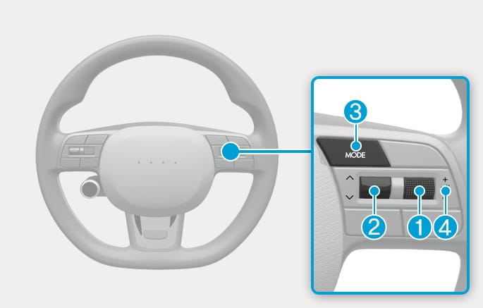

오디오 리모컨(스티어링 휠)
주행 중 안전하게 오디오 기능을 조작할 수 있습니다.

2C_AudioButtonOverview
-
î /ï 음량 조절 -
ñ /ò 짧게 누를 때 - FM/AM 모드: 즐겨찾기 채널 선택 - DMB 모드: 방송 채널 선택 - 미디어 모드: 트랙, 파일 또는 챕터 탐색 길게 누를 때(0.8초 이상) - FM/AM/DMB 모드: 방송 주파수 및 채널 자동 검색 - 미디어 모드: 빠른 탐색 -
Ĺ 미디어 모드 변경 -
é 미디어 소리 켜기/끄기
-
MODE 버튼 조작 시 지상파 DMB 송출 방식이나 방송 정책에 따라 지상파 DMB가 수신되지 않을 수 있습니다.
-
2개 이상의 조작 버튼을 동시에 누르는 경우 기능이 정상적으로 작동하지 않을 수 있습니다.